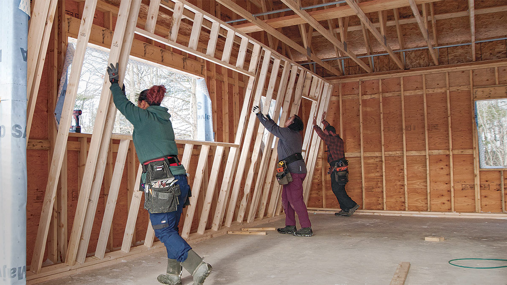

Last week was colour and type. This week is space: the box model, which is most of what separates a page that looks designed from one that looks typed. Then a short, practical look at forms, and your attractions page gets a contact form that actually sends you an email.
This session
Where we got to
In the tutorial that introduced CSS we covered a lot of ground. You learnt what a CSS rule looked like, what a selector and declaration were, how to add CSS to your HTML and how to style text. We also looked at colour and many of the important styles that we can apply to text. This week builds on that, starting with a few more ways of selecting things.
From the last tutorial on CSS we know that a style rule looks like:
p {
color: blue;
font-weight: bold;
}
A few more selectors
Element Selectors
An element selector is what we see in the example above. The selector selects elements in your HTML. We can also select many different types of elements all at once by typing commas between them, e.g.
h1,
h2,
h3,
p,
ul {
color: #FFCC00;
}This is great but there are limitations. For instance what if you wanted to change one particular paragraph to a different colour?
Class selectors, recap
You met these last week: a class attribute in the
HTML, a full stop in the CSS. Two things worth adding.
Multiple Classes
It is possible to attach several classes to a single item so that they inherit a number of different styles. To write this in your html you would create a space between them like so:
<!-- HTML -->
<div class="button">Normal Button</div>
<div class="button red-button">Red Button</div>
<div class="button blue-button">Blue Button</div>
<!-- CSS -->
.button {
padding: 10px 20px;
border: none;
border-radius: 5px;
font-weight: bold;
cursor: pointer;
}
.red-button {
background-color: #e74c3c;
color: white;
}
.blue-button {
background-color: #3498db;
color: white;
}Live Example:
Notice how the red and blue buttons inherit the padding, border-radius, and font-weight from the .button class, but add their own background color and text color.
Modular CSS
This is good coding as it makes your code very modular. You create a library of styles and add certain ones depending on what appearance you are wanting. This approach is called "composition" and is used heavily in modern CSS frameworks.
Descendant Selectors
Descendant selectors target elements that are contained within other elements. These elements are descendants of the containing element. For instance we could target all list items in only unordered lists by applying a style rule of:
ul li {
color: #FFCC00;
}Only the list items in unordered lists would be effected. Those in ordered lists or definition lists would not. To show an item is a descendant we just leave a space between the parent and child element.
The following rule would target any text that was emphasized in an h1, h2 or h3 tag:
h1 em,
h2 em,
h3 em {
color: red;
}Live Example - Descendant Selectors:
Heading with emphasized text inside
This paragraph has normal styling
- Unordered list item 1 (red and bold)
- Unordered list item 2 (red and bold)
- Ordered list item 1 (blue and italic)
- Ordered list item 2 (blue and italic)
Notice how ul li only styles the unordered list items,
ol li only styles the ordered list items, and
h3 em only styles emphasized text inside h3 headings!
Attribute Selectors
Attribute selectors allow you to target elements based on their attributes and attribute values. These are incredibly useful for styling forms and selecting elements with specific HTML attributes.
Basic Attribute Selectors
/* Select all input elements with a type attribute */
input[type] {
border: 2px solid blue;
}
/* Select input elements where type is exactly "text" */
input[type="text"] {
background-color: #f0f0f0;
}
/* Select input elements where type is exactly "email" */
input[type="email"] {
background-color: #e8f4f8;
}
/* Select links that have a target attribute */
a[target] {
font-weight: bold;
}
/* Select links where target is exactly "_blank" */
a[target="_blank"] {
color: #e74c3c;
}Live Example - Attribute Selectors with Forms:
Notice how each input type has a different background color based on its type attribute. This is extremely useful for styling forms where you want different input types to look different.
Common Use Cases for Attribute Selectors
-
Form styling - Style different input types
differently (
input[type="text"],input[type="email"]) -
Required fields - Highlight required form
fields (
input[required]) -
Disabled elements - Style disabled inputs
(
input[disabled]) -
External links - Style links to external sites
differently (
a[target="_blank"])
Exercise 1 - Style a Music Playlist
You've been given a music playlist page that needs styling. Use element selectors, class selectors, descendant selectors, and attribute selectors to make it look awesome.
In this exercise you'll practice:
- Element selectors - Style all headings and paragraphs
- Class selectors - Target featured songs, new releases, and classics
- Descendant selectors - Style songs only within specific playlist sections (Rock, Pop, Chill)
- Attribute selectors - Style songs based on their genre and mood attributes
Open the class-exercises.zip file in today's tutorial folder on MyBeckett. Unzip and follow the 13 numbered TODO instructions in the CSS section. Each task tells you exactly which selector to use and what to style.
Hint
Don't worry about padding, margins, or layout yet - we'll cover that in Exercise 2. For now, focus on colours, fonts, and text styling using the different types of selectors you've learned. All the TODO tasks are clearly marked in the CSS - just follow them in order!
CSS Specificity - Which Rule Wins?

When you have multiple CSS rules targeting the same element, the browser needs to decide which one to apply. This is called specificity. Understanding specificity helps you predict how your styles will work.
The Specificity Hierarchy (from weakest to strongest):
- Element selectors (e.g. p, h1, div)
- Class selectors (e.g. .button, .intro)
- ID selectors (e.g. #header, #main-nav)
Here's an example to show how this works:
/* Element selector - weakest */
p {
color: blue;
}
/* Class selector - stronger */
.intro {
color: green;
}
/* ID selector - strongest */
#special {
color: red;
}If you have this HTML:
<p class="intro" id="special">What colour will this be?</p>The text will be red because the ID selector (#special) has the highest specificity, even though all three rules could apply to this paragraph.
Live Example:
I'm styled with element selector (p) - I'm blue
I'm styled with class selector (.intro) - I'm green (class beats element)
I'm styled with ID selector (#special) - I'm red (ID beats class and element)
All three paragraphs could be styled by the p selector,
but the more specific selectors win!
Common Mistakes with Specificity
- Forgetting the . before class names - .button not button
- Forgetting the # before ID names - #header not header
- Using too many IDs - IDs are very specific and hard to override. Use classes instead!
- Wondering why styles don't apply - Check if another more specific rule is overriding yours
Best Practice for Beginners
Use classes for styling, save IDs for JavaScript. Classes are flexible and reusable. IDs should be unique on a page and are better suited for JavaScript interactions or anchor links.
There are many more
CSS has dozens of other selectors (first child, direct child, "the paragraph straight after a heading", and so on). You don't need them yet. If you fancy a puzzle, CSS Diner teaches most of them as a game; it gets tricky after level 10.
Block and inline elements
The key difference
Block Level Elements:
- Create a new line (stack vertically)
- Take up full width available (they're "greedy")
-
Examples:
<h1>,<p>,<ul>,<li>,<div>
Inline Elements:
- Flow with text on the same line
- Only take up as much width as needed
-
Examples:
<em>,<strong>,<a>,<span>,<img>
Changing Display Behaviour with CSS
You can actually change whether an element behaves as block or inline using the display property in CSS:
/* Make an inline element behave like block */
span {
display: block;
}
/* Make a block element behave like inline */
div {
display: inline;
}
/* inline-block: best of both worlds! */
/* Flows inline but accepts width/height */
.button {
display: inline-block;
width: 150px;
padding: 10px;
}Live Example - Display Property:
Block Elements (each on new line):
Inline Elements (flow together):
Inline 1 Inline 2 Inline 3Inline-Block (flow together but accept width/padding):
Common Use Case: inline-block
display: inline-block; is very useful! It lets
elements sit side-by-side like inline elements, but you can still
give them width, height, padding, and margin like block elements.
Perfect for creating button groups or navigation items that sit
next to each other.
The following CodePen shows a page with block and inline elements:
View Block vs Inline Demo on CodePen
The <div> Element
The <div> (division) element is a block-level container. It's used to group elements together so you can style them or position them as a unit. Divs don't have any semantic meaning - they're purely for layout and styling.
<div>
<h2>Product Features</h2>
<p>This product includes amazing features...</p>
<ul>
<li>Feature 1</li>
<li>Feature 2</li>
</ul>
</div>When to Use Divs vs Semantic Elements
- Use semantic elements when the content has meaning: <header>, <nav>, <article>, etc.
- Use divs when you need a container purely for styling or layout purposes
The <span> Element
The <span> element is an inline container. It's used to style or manipulate a small piece of text within a larger block of content.
<p>
This product is available in
<span style="color: red;">red</span>,
<span style="color: blue;">blue</span>, and
<span style="color: green;">green</span>.
</p>Block vs Inline Elements:
- Block elements (like <div>, <p>, <h1>) start on a new line and take up the full width
- Inline elements (like <span>, <a>, <strong>) sit within the flow of text
The Box Model

The Box Model is a set of rules that defines how elements are sized, the total amount of space they take up and where they are positioned in relation to each other. This is the foundation of layout on the web.
Every element on a page can be considered to be a rectangular box. The box is made up of the element's content, padding, border and margin.
We are able to give the box a width and height.

Pro Tip: Visualize the Box Model with Browser DevTools
The best way to understand the box model is to see it in action:
- Right-click on any element on your webpage
- Select "Inspect" or "Inspect Element"
- Look for the colorful box diagram at the bottom of the DevTools panel
You'll see the content (blue), padding (green), border (yellow), and margin (orange) visually represented with their actual pixel values. This is incredibly helpful for debugging spacing issues!
Try it now: Right-click on this box and inspect it to see its box model!
Live Example - Box Model Visualization:
200px wide
The box above shows all parts of the box model correctly. The blue area is the content, the green area is the padding, the red line is the border, and the white space between the red border and gray background is the margin (transparent).
The Four Parts of the Box Model
Content
The content of the box, where text and images appear.
Padding
Clears an area around the content. The padding is affected by the background color of the box.

Border
A border that goes around the padding and content. The border is affected by the background color of the box.
Margin
Clears an area around the border. The margin does not have a background color, it is completely transparent.
Common Confusion: Padding vs Margin
Padding = space INSIDE the element (between content and border). Padding takes the background color.
Margin = space OUTSIDE the element (between border and other elements). Margin is always transparent.
Memory trick: Think of padding as the "padding" in a coat - it's inside the coat making it thicker. Margin is the "personal space" around you and others.
Important!
By default when you specify the width and height properties of an element with CSS, you are just setting the width and height of the content area. To know the full size of the element, you must also add the padding, border and margin.
The total width of .content and it's surrounding
margin in the example below is 440px:
300px (content width) + 50px (padding left) + 50px (padding right) + 10px (border left) + 10px (border right) + 10px (margin left) + 10px (margin right) = 440px
.box {
width: 300px;
padding: 50px;
border: 10px solid black;
margin: 10px;
}box-sizing property
From what I've said above the following is the usual case:
width + padding + border = actual visible/rendered width of an element's box
However if we set the box-sizing property to border-box the width that we set we actually get.
.box {
box-sizing: border-box;
width: 300px;
padding: 50px;
border: 10px solid black;
margin: 10px;
}In the above code the total width of the element is now 300px but we still need to add on the margin to each side.
300px + 10px (margin on left) + 10px (margin on right) = 320px
View box-sizing Example on CodePenProfessional Best Practice: Universal Box-Sizing
Most professional developers start their CSS files with this code
to apply border-box to all elements:
* {
box-sizing: border-box;
}
This makes all elements use the more intuitive
border-box sizing by default. The * is
the universal selector that targets everything on the page.
Why do this? It saves you from having to remember
to add box-sizing: border-box;
to every element individually, and makes calculating widths much
more predictable!
CSS Shorthand
CSS often allows you to write less code by putting it in shorthand. Adding margins, paddings and borders is supported by shorthand in this way.
Remember: Clockwise from the Top!
When using shorthand with 4 values, the order is always: Top, Right, Bottom, Left (clockwise starting from the top).
Memory trick: Think of a clock going around: 12 o'clock (top), 3 o'clock (right), 6 o'clock (bottom), 9 o'clock (left)
.box {
margin-top: 20px;
margin-bottom: 30px;
margin-right: 40px;
margin-left: 50px;
}Live Example - CSS Shorthand Padding:
padding: 40px 20px 10px 30px;, Top: 40px, Right:
20px, Bottom: 10px, Left: 30px (clockwise from top)
padding: 30px 50px;, Top/Bottom: 30px,
Left/Right: 50px
padding: 25px;, All sides: 25px
Notice how the blue background area changes size based on the padding values. The first box has noticeably more space at the top, the second box has more space on the sides, and the third box has equal space on all sides.
/* Can be written in shorthand: */
/* Order: top, right, bottom, left (clockwise) */
.box {
margin: 20px 40px 30px 50px;
}If there are equal values for top and bottom and then equal values for each side we can write it like:
.box {
margin-top: 100px;
margin-bottom: 100px;
margin-right: 50px;
margin-left: 50px;
}
/* Can be written: */
.box {
margin: 100px 50px;
}If there are equal values all the way round we can write it like:
.box {
margin-top: 100px;
margin-bottom: 100px;
margin-right: 100px;
margin-left: 100px;
}
/* Can be written: */
.box {
margin: 100px;
}Knowledge Check: Box Model
Test your understanding of the CSS Box Model:
Question 1: If an element has width: 200px,
padding: 20px, and
border: 5px solid black, what is the actual
rendered width with the default box-sizing?
Question 2: In the CSS shorthand
padding: 10px 20px 30px 40px;, which value applies
to the LEFT side?
Question 3: What does
box-sizing: border-box; do?
📝 Exercise 2 - Music Playlist - Applying padding, margins & borders
Now that you've practiced selectors in Exercise 1, it's time to apply the Box Model! You'll continue working on the music playlist page from Exercise 1 and make it look more polished by adding padding, margins, and borders.
In this exercise you'll practice:
- Adding padding to create space inside elements
- Adding margins to create space between elements
- Adding borders to define element boundaries
- Using shorthand properties to write cleaner CSS
Follow the instructions in the CSS file. The TODO tasks will guide you through improving the spacing and layout of the playlist.
Hint
Remember the Box Model! When adding padding and borders, they add to the total width. Consider using box-sizing: border-box; to make sizing more predictable.
Break
Halfway
After the break: centring, backgrounds, and a form that sends.
Centring a page
We are able to apply the box model in order to center our page in a browser window. For this we use the margin property. In order for this to work we need to do 2 things:
- Constrain the width (give our wrapper class a width)
- Apply the CSS property
margin: 0 auto;
The link below shows a codepen demonstrating this:
View Centring Example on CodePenA variation on this idea
Many times when we design sites we want to center our content in a browser window but extend the background colours of our page sections to full width. We can do this by instead of using just one wrapper container for the whole page, using one per page section. See the link below.
View Multiple Wrappers Example on CodePenExercise 3 - Centring the Music Playlist
Now that you've learned how to center a page using max-width and margin: 0 auto, apply this technique to your music playlist from Exercises 1 and 2.
In this exercise you'll:
- Set a max-width on your page container (try 600px)
- Use margin: 0 auto to center the content
- See how your playlist looks centred on wider screens
Open your files from Exercise 2. Add the centring CSS to make the playlist centred on the page.
Tip
You can either add a wrapper div around all your content, or apply the max-width and margin to the body element itself. Both approaches work!
Backgrounds, briefly
You have set background colours already. You can also set a background image on any element. It's worth knowing, and it's worth knowing when not to: last year's portfolios had a lot of background images and not much else, and the marks reflected that.
Use HTML <img> elements when:
- The image conveys information - Product photos, diagrams, infographics, portraits
- The image is content - Anything users need to see to understand the page
- Screen readers should describe it - Any image that needs an alt text description
- Search engines should index it - Images that are relevant to your page content
- Users might want to save/share it - Right-click to download, print, etc.
<!-- HTML image - content that matters -->
<img src="product-photo.jpg" alt="Blue cotton t-shirt with round neck">Use CSS background images when:
- The image is purely decorative - Patterns, textures, gradients
- The image is for visual design only - Page backgrounds, subtle textures
- The image doesn't convey information - Abstract patterns, color fills
- Removing it wouldn't affect understanding - The page still makes sense without it
- It's part of the styling, not content - Design elements that enhance but don't inform
/* CSS background - decorative only */
body {
background-image: url('subtle-pattern.png');
}⚠️ Accessibility Matters
CSS background images are
invisible to screen readers and cannot have alt
text. If a user needs to know about an image to understand your
content, it must be an HTML <img>
element with proper alt text. This isn't just good practice - it's
essential for making the web accessible to everyone.
The properties you need
.hero {
background-color: #1d3557; /* always give a fallback colour */
background-image: url('images/skyline.jpg');
background-size: cover; /* fill the box, cropping if needed */
background-position: center; /* which bit to keep when cropping */
background-repeat: no-repeat;
}
/* the same thing in shorthand */
.hero {
background: #1d3557 url('images/skyline.jpg') center / cover no-repeat;
}
The path in url() is relative to the
CSS file, not the HTML file. If your stylesheet and
your pages are in the same folder that makes no difference; if you
ever move the CSS into its own folder it does.
Text on top of a photo
White text on a photograph is readable only where the photo is
dark. Either pick an image with a quiet area, or put a
semi-transparent dark layer behind the text:
background-color: rgba(0, 0, 0, 0.5); on the text's
container. Then check the contrast, same as any other text.
That is all the background CSS this module needs. A full-page tiling pattern or a hero image at the top of a page, used once and well, looks good. The same image behind every section does not.
Forms that send
Forms are an essential part to most websites. We use them all the time to get things done. When you logged on to MyBeckett to view this tutorial you used a Form to enter your username and password, if you bought some items on Amazon you would have used a form element to pay and at some point you would have used a form to store your address details so they could be sent to you.
Forms are used to collect information from a user. This information is usually sent to a program on the server for processing. They can contain input elements like text fields, checkboxes, radio-buttons, submit buttons and more. A form can also contain select lists, textarea, fieldset, legend, and label elements. We will cover all of these elements below.
The form element
<form method="post" action="https://formspree.io/f/your-form-id">
<!-- all of your form content goes here -->
</form>action is where the browser sends the answers when the form is submitted: normally a program on a server. method="post" sends them in the body of the request rather than tacked onto the address bar.
A side note on some new terminology
Front-end vs Back-end
You might occasionally hear me talk about front-end and back-end development. Front-end is what we mainly cover on this course. Everything you are learning on this module is front-end web development. It is concerned with how sites look and the content of websites.
Back-end web development is concerned with the things that you don't see (round the back). These are the scripts that sit on the server that handle data. This would be taught on a more traditional computing degree although if you pick the Web Development module in your final year you will learn a little about PHP which is one of the main languages used in back-end development.
In web agencies if you got a job that involves building websites (coding them) you would tend to get employed as either a front-end developer or a back-end developer.
A simple form
The simplest type of form might be a basic sign-in form where someone enters their username and password to access a website. Let's look at what that might look like.
<form method="post" action="script-on-server.php">
<label for="username">Username</label>
<input type="text" id="username" name="uname">
<label for="password">Password</label>
<input type="password" id="password" name="pass">
<button type="submit">Sign in</button>
</form>Notice how the type attribute in each input element determines how the browser handles the input and renders its display. Both of these render like text input boxes on the screen but the browser replaces the password field with dots for security.
The <label> element
The <label> element allows us to put text on the screen next to the input boxes so the user knows what type of information the input boxes are expecting. We can link labels to the form fields by using the for attribute on the label and the id attribute on the input element. If the value for both is the same it associates them together. By using labels the user can click on the descriptive text to highlight the form field. This is good for touch devices and for accessibility.
The inputs you'll actually use
The <input> element changes what it does
according to its type. There are over twenty types.
A contact form needs about three.
<label for="name">Your name</label>
<input type="text" id="name" name="name" required>
<label for="email">Your email</label>
<input type="email" id="email" name="email" required>
<label for="phone">Phone (optional)</label>
<input type="tel" id="phone" name="phone">
<label for="message">Message</label>
<textarea id="message" name="message" rows="6" required></textarea>
<button type="submit">Send message</button>- type="email" makes the browser check the value looks like an email address, and on a phone brings up a keyboard with @ on it. type="tel" brings up the number pad.
- required stops the form submitting until the field is filled in. No JavaScript needed.
- name is the label the answer arrives with. Set it on every field or the answer arrives without a name.
-
<textarea> is a multi-line text box; give
it
rowsto set its height. - <button type="submit"> sends the form. Put the verb on it: "Send message", not "Submit".
Try it yourself
Leave the name empty, or type "hello" as the email, and press the button. The browser refuses and tells you why.
Radio buttons, checkboxes, drop-downs and date pickers all exist and
all work the same way (a label, an input
with a type, a name). When you need one,
MDN's input reference
lists every type with an example.
Making it send: Formspree
A form with action="#" goes nowhere. Since we have no
server of our own, we borrow one.
Formspree is a
free service that gives you an address to post a form to and emails
you whatever people type. Setting it up takes five minutes:
- Create a free account at formspree.io with your university email.
- Click New Form, give it a name and choose the email the messages should go to.
-
Formspree shows you a form address that looks like
https://formspree.io/f/abcdwxyz. Copy it. -
Paste it as the
actionof your form and make sure the method ispost. - Open your page, fill the form in and send it. The first time, Formspree emails you to confirm the address. After that, every submission arrives in your inbox.
Every field needs a name
Formspree can only tell you what was typed in fields that have a
name attribute. If your email arrives half empty,
that's why.
A form that does something is far more convincing in a portfolio than one that doesn't, and this is the first time your page has done anything on a server. Note the terminology box above: you have just used somebody else's back end.
Styling the form
Form controls are ordinary boxes: give them padding, a border, a width and some margin like anything else. Two rules go a long way:
label {
display: block; /* label on its own line above the field */
margin-top: 1rem;
font-weight: bold;
}
input,
textarea {
display: block;
width: 100%;
padding: 0.6rem;
border: 2px solid #ccc;
border-radius: 4px;
font-size: 1rem;
font-family: inherit; /* textareas default to a monospace font */
}
button {
margin-top: 1rem;
padding: 0.7rem 1.4rem;
border: none;
border-radius: 4px;
background-color: var(--brand);
color: white;
font-size: 1rem;
transition: background-color 0.2s ease;
}
button:hover,
button:focus {
background-color: #333;
}For more, web.dev's guide to styling forms is the one to read.
Portfolio Task 3 continues: spacing and a contact section
Open the attractions.html and styles.css you started last week. This week's additions:
Requirements
-
Add
* { box-sizing: border-box; }to the very top of your stylesheet, above:root. -
Set a maximum width of 600px on the page and
centre it with
margin: 0 auto, as shown in the centring section. On a phone nothing changes; on a laptop the page stops sprawling. - Use padding, borders and margins to give each attraction room to breathe: space inside each card, space between the cards, and a border or background on the Don't Miss ones. Nothing on your page should touch the edge of the screen.
-
Add a
sectionat the bottom of the page with anidofcontactand a heading such as "Plan your visit". Inside it, a form with a name, an email and a message field, all labelled, the first two required, and a send button. - Wire the form to Formspree and test that a message arrives in your inbox.
- Style the form using the rules above, adapted to your palette.
-
Add a link to
#contactin your nav. - Optional: a background image on the page header, with a fallback colour, and readable text on top of it.
- Validate the HTML. Check it still works when you double-click the file from Finder or Explorer.
Common mistakes
- Mixing up padding (inside) with margin (outside)
- Forgetting
box-sizing: border-boxand wondering why widths don't add up - Testing in a wide window. This is a phone page: make the window narrow.
- A label that isn't linked to its input (the
formust match theid) - Fields without a
name, so the email arrives empty